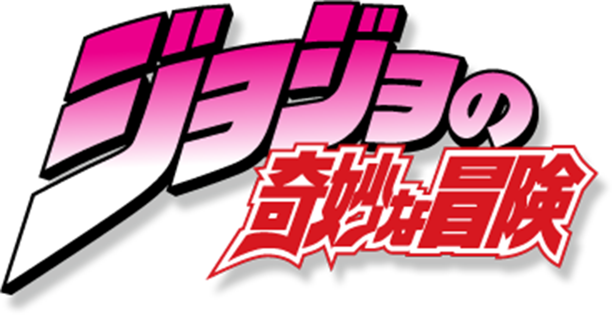

Jotaro vs Jonathan

We will be looking at the First protagonist and Third protagonist of the popular series JoJo's Bizarre Adventure.
Click one of the images below!
To learn more about the strengths and weaknesses of the protagonists.
What we will be comparing:
- The part they are present in
- Their powers
- Why they are (un)popular among fans
Main Topics
- Character Backgrounds
- Strengths and Weaknesses
- Overall Popularity
Top Episodes Featuring Protagonists
- Season 1, Episode 1: Dio the Invader
- Season 1, Episode 9: The final Ripple
- Season 2, Episode 1: A Man Possessed by an Evil Spirit
- Season 2, Episode 45-47: Dio's World
- Key terms:
- Stands: Psychic entity or avatar generated and used by its owner
- Hamon: An advanced development and manipulation of the human breath
- JoJo: The generational family nickname for each of the protagonists throughout the series